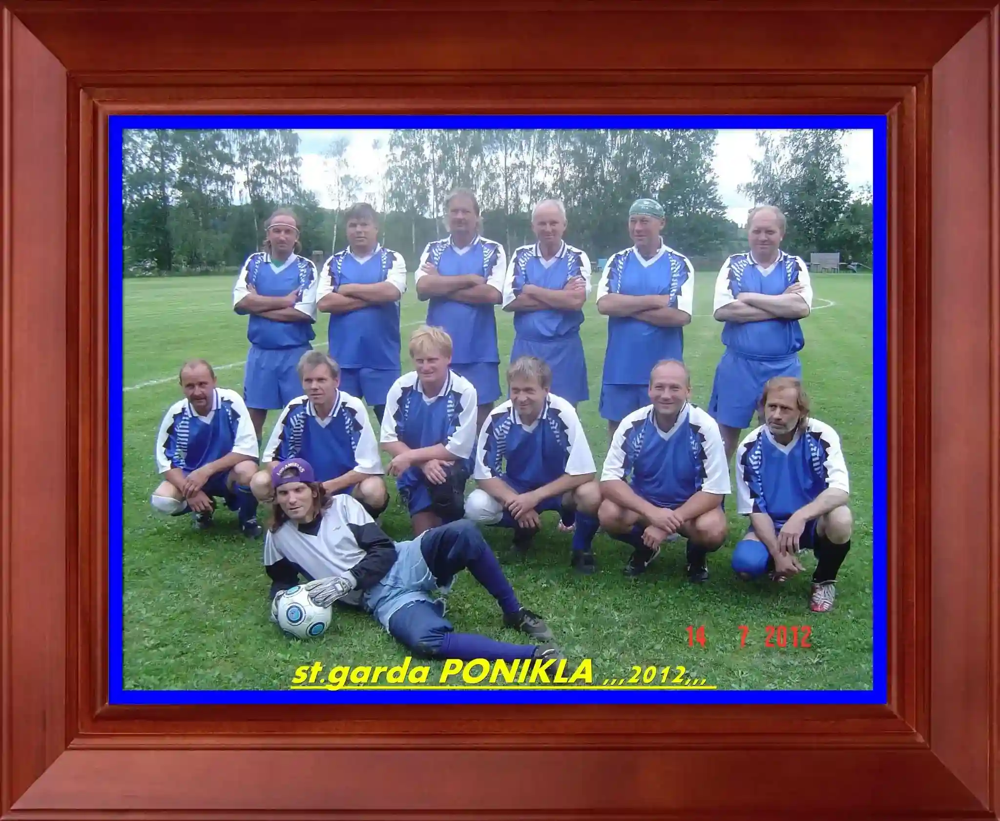
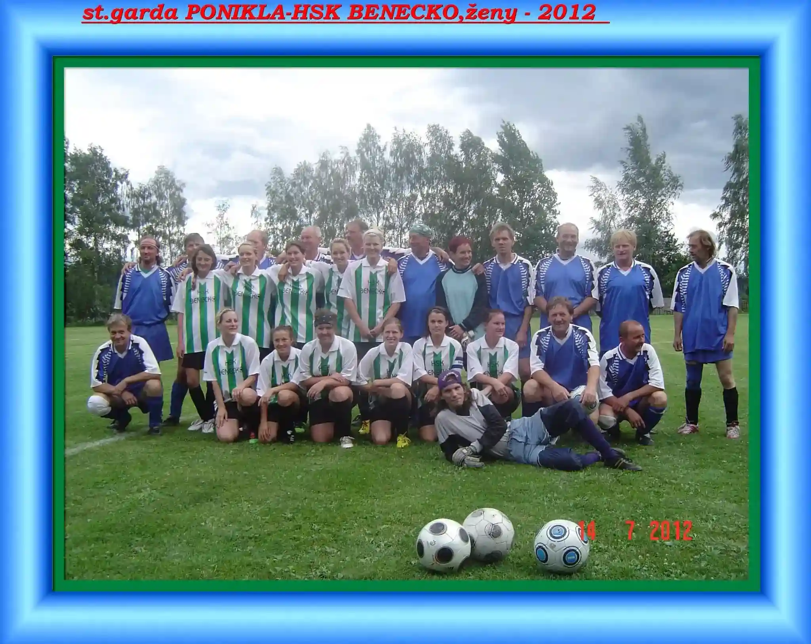
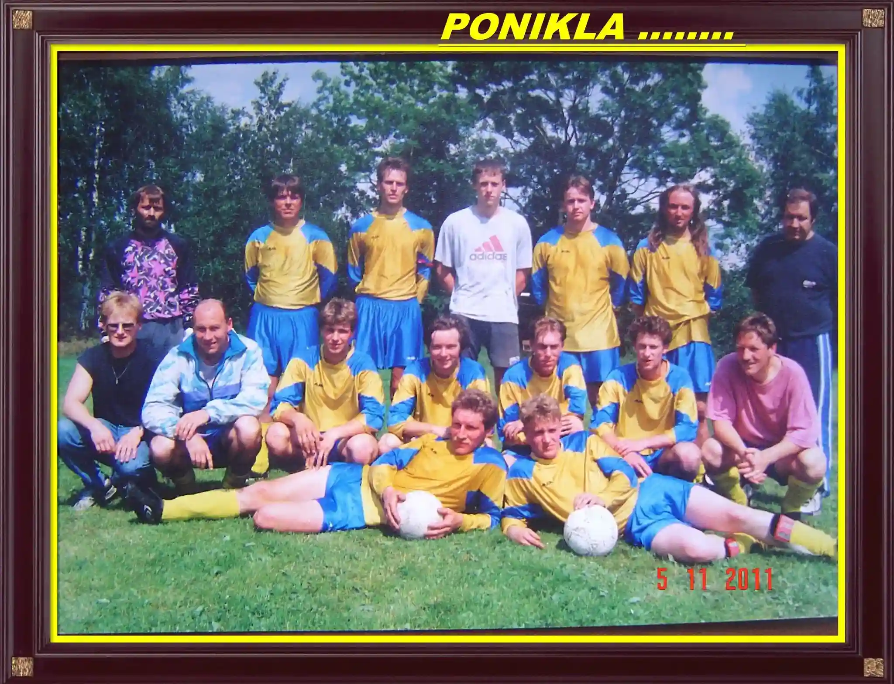

Kořeny fotbalu v Poniklé sahají až k činnosti Sokola Přívlaka, založeného 9. ledna 1921. Původní kronika se bohužel po druhé světové válce ztratila. V 70. letech došlo k přejmenování na TS SEBA Poniklá (název se podle pramenů používal už od roku 1978, oficiálně registrován 1991). Od února 2004, po ukončení podpory od firmy SEBA, nese klub název TJ Poniklá.
První tréninky probíhaly v tělocvičně na Přívlace a na malém hřišti za náhonem turbíny závodu SEBA 12. V zimě se hrával i hokej na improvizovaném ledě. Později se tréninky přesunuly do školní tělocvičny, od roku 2010 do nově dostavěné obecní haly.
Hřiště se začalo budovat na místě zvaném „Na Kozinkách“ – rozhodující byl blízký přístup pro místní ZŠ. Místo mělo nevýhodu horší dostupnosti, parkování a zásobování vodou. Výstavbu vedli Jaromír Spěváček, Ladislav Václavík st. a Vladimír Patočka st. V letech 1989–1993 proběhly velké úpravy kabin – nové sprchy, podlahy, nátěry střechy. Klub se dodnes pyšní jedněmi z nejhezčích dřevěných kabin v okrese Semily.
V roce 1996 přibyla tartanová dráha a pískoviště pro skok daleký, hlavně díky SDH Poniklá. O deset let později byly za branky instalovány sítě a postavena železná brána proti vjezdu aut.
První přípravné utkání sehráli muži 13. srpna 1972 ve Víchové nad Jizerou, kde podlehli 2:12. První mistrovský zápas proběhl se Sokolem Kruh (prohra 3:5). Od roku 1972 hráli muži i žáci, v roce 1974 se přidal dorost a v roce 1986 minižáci.
Největším úspěchem byla sezóna 1991/1992, kdy se dorost probojoval do krajské soutěže. Žáci několikrát vyhráli okresní soutěž (např. 2006–2009). Do roku 2011 odehrála všechna mužstva dohromady 2 212 utkání – z toho muži 951 (včetně pohárů a turnajů), dorost 352, žáci 746 a minižáci 163.
Kromě fotbalu pořádá klub tradiční Turnaj o poutní koláč (od 1981), přátelská utkání s celebritami (např. FC Radiožurnál, Pivrncova jedenáctka s Petrem Urbanem), akce s týmem internacionálů Slavie Praha a další. Od roku 1996 se na hřišti koná pálení čarodějnic. Klub se účastnil i ponikelské speciality – rejodovaček – závodů na saních dvojic, pořádaných od 1970.
Velkou společenskou událostí je fotbalový ples, který spolu s výtěžkem kiosku tvoří důležitý zdroj financí pro klub.
Mezi předsedy TJ patřili: Vladimír Patočka st. (1972–1988), František Václavík (1989–1995), Vlastimil Svatý st. a Josef Jandura st. (1995–2004), Stanislav Kowalewski (2004–2007), a od roku 2007 opět Josef Jandura st. Dlouholetým pokladníkem byl Josef Zemánek, poté Vladimír Patočka st., Hana Jiroušová a od 2003 Jaromír Jirouš st.
Fotbal v Poniklé vždy znamenal více než jen sport – byl a je centrem společenského života obce. Přes problémy s hráčskou základnou i financemi klub přežil desítky let díky nadšení dobrovolníků, hráčů i fanoušků. Do roku 2012 má za sebou bohatou historii, plnou úspěchů, těžkých chvil i nezapomenutelných momentů.
Dnes má TJ Poniklá 71 mužů, 3 ženy a 15 mladších žáků a stále patří mezi aktivní sportovní kluby v regionu.


